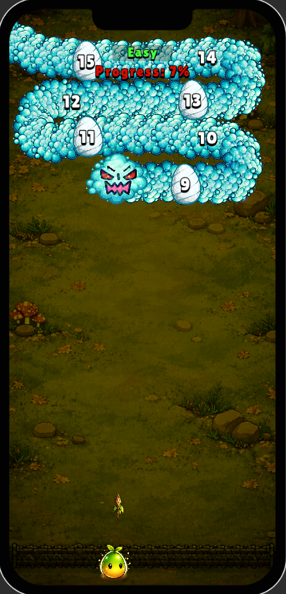

1 / 5
01 · Failure-safe Unity architecture
Last Seed Survivor
What happens when a pooled segmented enemy fails halfway through spawn, or an ad callback interrupts a reward flow? Last Seed makes those failure paths explicit, reversible, and testable.
- Trace one gameplay frame from a single input snapshot through named stages, with engine-free C# state isolated from Unity adapters.
- Follow segmented-worm construction and reward/ad flows through validation, late commit, reverse rollback, and owned cleanup.
- See those boundaries enforced by 299 EditMode and 29 PlayMode tests, project validators, deterministic balance simulations, and profiler markers.